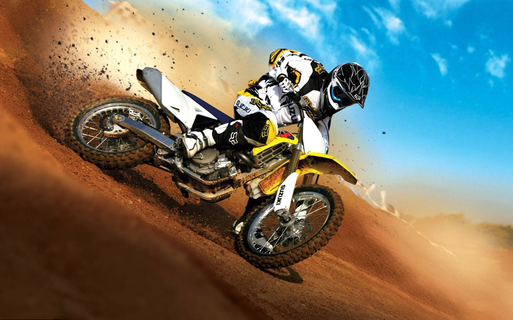
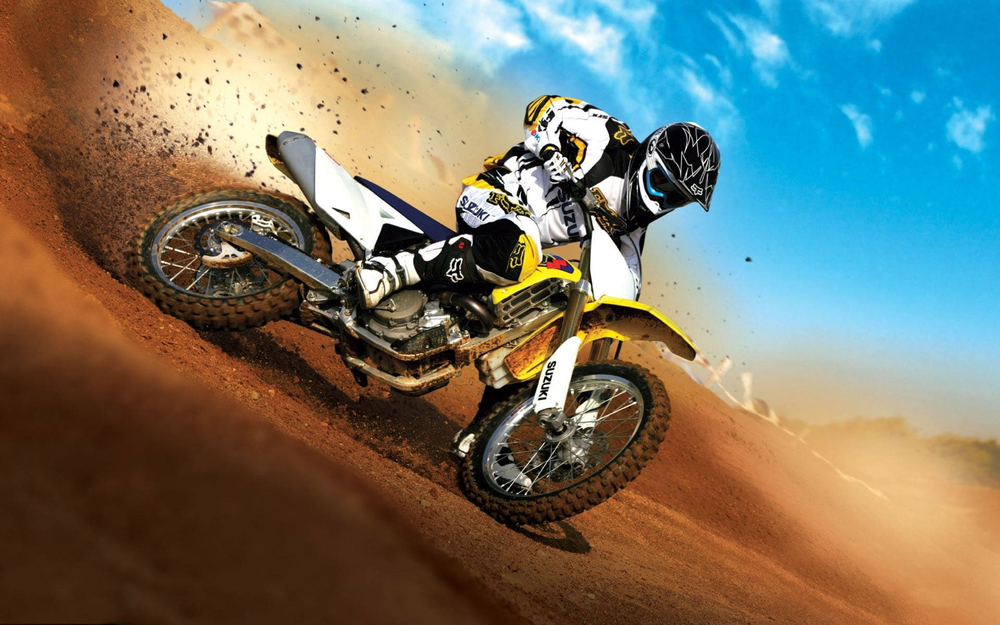

Misión
"Ofrecer experiencias de deportes extremos seguras, emocionantes e inolvidables, fomentando la pasión por la aventura y el desarrollo personal de nuestros clientes, mientras promovemos el respeto por el medio ambiente y la comunidad."
Los deportes extremos son actividades físicas que implican un alto nivel de riesgo y adrenalina, a menudo realizados en entornos naturales desafiantes. Estos deportes suelen requerir habilidades especializadas, equipo adecuado y una preparación física y mental significativa. Algunos ejemplos populares de deportes extremos incluyen el paracaidismo, el surf en olas gigantes, la escalada en roca, el snowboard en terrenos difíciles y el rafting en aguas bravas. La popularidad de los deportes extremos ha crecido en las últimas décadas, atrayendo a personas que buscan emociones fuertes y experiencias únicas al aire libre.

 

"Ofrecer experiencias de deportes extremos seguras, emocionantes e inolvidables, fomentando la pasión por la aventura y el desarrollo personal de nuestros clientes, mientras promovemos el respeto por el medio ambiente y la comunidad."
"Ser la empresa líder en deportes extremos a nivel internacional, reconocida por la innovación en experiencias de aventura, la excelencia en seguridad y el impacto positivo en la vida de quienes buscan superar sus límites."